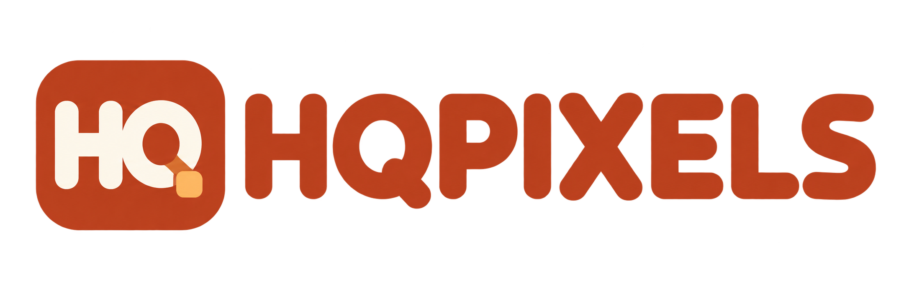
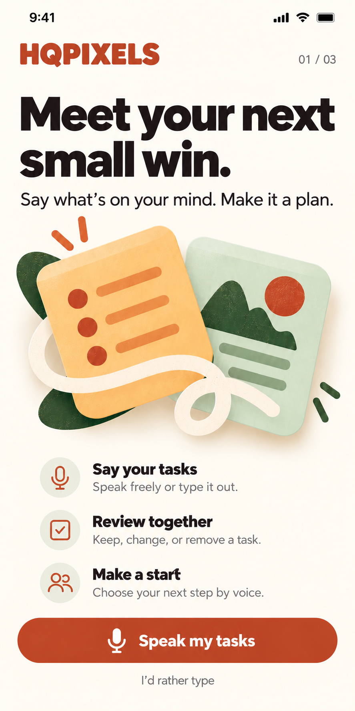
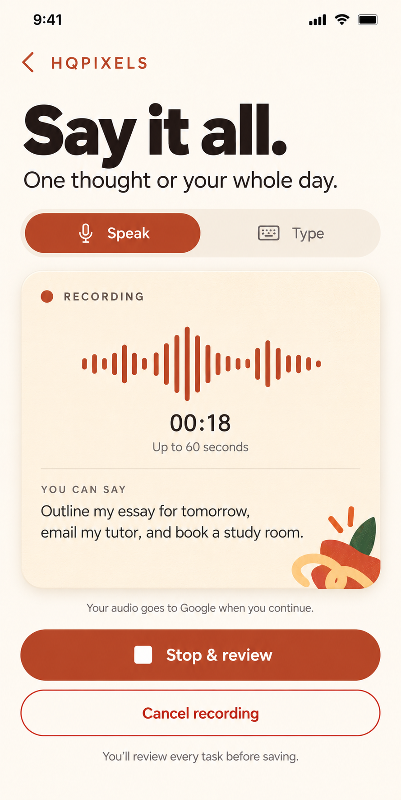
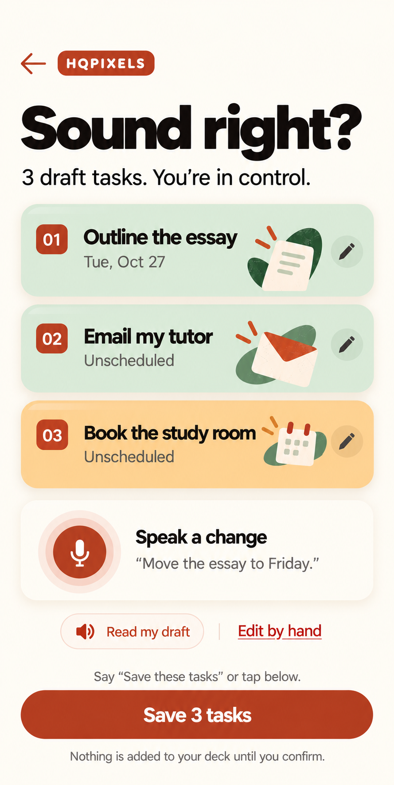
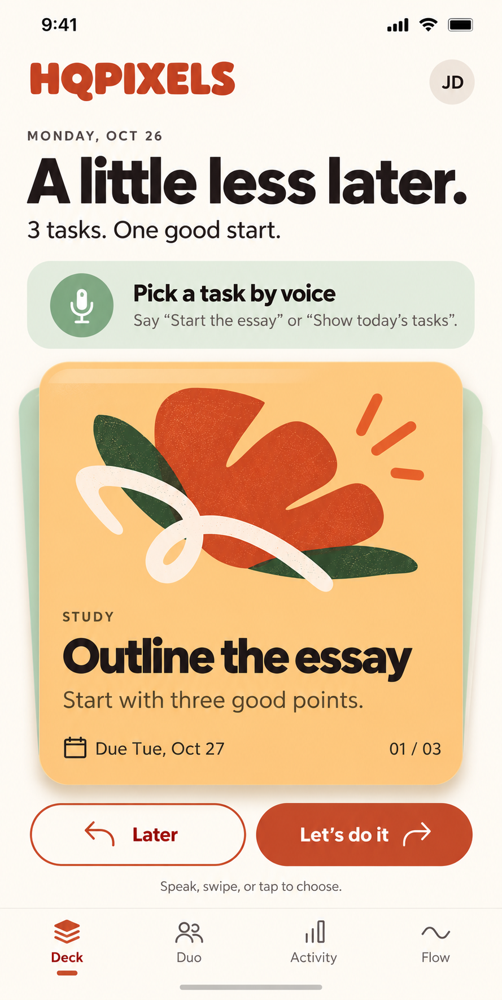

Speak naturally.
One task or a whole day. Typing is always an option.

FLIP DESIGN · PROJECT DRAFTA LITTLE LESS ENTRY. A LITTLE MORE DOING.
Your thoughts become a plan you control. Speak your tasks, refine them together, then save the whole batch.
HQPIXELS · “HQ” for short · Warm, playful FLIP styling

One task or a whole day. Typing is always an option.
Review the draft. Say what to change, remove or add.
Save the reviewed batch. Start a task by saying its name.
THE CORE JOURNEY
Four updated PNG screens preserve the FLIP look. Open any image for its original export.



WHAT IT FEELS LIKE
A sample conversation from the proposed app. These messages illustrate behavior; this gallery does not record audio or call Google.
Outline my essay for tomorrow, email my tutor, and book a study room.
Three tasks drafted. The essay is due tomorrow; the others are unscheduled. Want to change anything?
Move the essay to Friday.
Updated to Friday, October 30. Save these three tasks?
Save all three.
Illustrative context: October 26, 2026 · America/Chicago
READY FOR IMPLEMENTATION
Google-powered understanding, human-reviewed tasks, and clear build milestones.
Voice behavior, Google setup, architecture, data model, recovery and release gates.
02 / DELIVERY PLANPriorities, dependencies and concrete acceptance checks for the implementation.
03 / START BUILDINGA cohesive implementation brief to use with these assets and specifications.